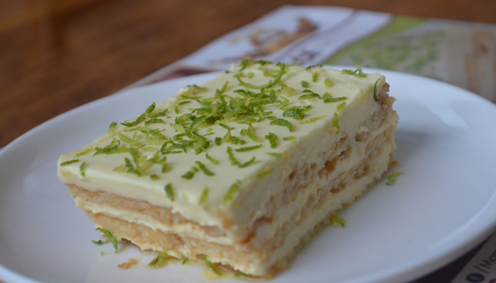

Cocina Geek
"El blog de los cocineros
tecnologicos"
Favoritos:


Historial:
Sufle de queso
21 de agosto 2018
Toma primero nota de los ingredientes necesarios:
1 litro y medio de leche;
4 cucharadas soperas de harina;
Media docena de huevos;
200 gr de queso gruyère rallado;
sal y pimienta.
ELABORACIÓN:
Con la leche y la harina hacer una bechamel, a la que se añadirá el queso gruyère. Una vez hecha,
apartar del fuego. Separar las claras de las yemas. Mezclar las últimas con la bechamel. Batir
las claras a punto de nieve, mezclar con la bechamel con una espátula y movimientos envolventes
(para que no se baje) y verter en un molde previamente untado con mantequilla. Meter en el horno,
previamente precalentado a 200 grados, hasta que suba, 20 minutos aproximadamente. Hay que tener
cuidado de no abrir el horno durante la cocción. Servir inmediatamente.
Escribe un comentario:

Jorge2415:La receta esta muy bien explicada, me gusto mucho la forma tan secilla de explicar para hacer mi propio sufle. saludos!!!
Carmen.flo:Alguin podria explicarme como puedo dar el punto exacto de suflado, no se si he hecho algo mal pero el sufle no me crece :( , he seguido al pie de la letra las instrucciones pero no me funciona.
Postre De Limon
30 de agosto 2018

Toma primero nota de los ingredientes necesarios:
1 Paquete de galletas Ducales.
1 Lata de crema de leche grande.
1 Lata de leche condensada grande.
Zumo de limón (al gusto).
Rayadura de limón
ELABORACIÓN:
Mezcle la crema de leche, el zumo de limón y la leche condensada en un recipiente hasta obtener
una mezcla homogénea. Aparte en una refractaria, haga una capa de galletas y a continuación agregue
parte de la mezcla anterior. Repita otra capa de galletas y otra de la mezcla. Arme varias capas
de esa forma hasta que termine con los ingredientes o según su gusto. Por último, decore con la rayadura
de limón y deje refrigerar.
Escribe un comentario:
chefsitocristian:muy rico el postre pero a mi opinion personal podrian usar galletas saladas para darle un toque mas balanceado.
jennyZ.30:me encanto la receta la realize